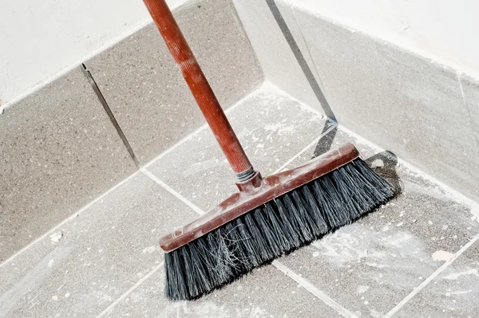

Terceirização de Serviços de Limpeza e Conservação
Localizada em São Bernardo do Campo, a LG Serviços atende todo o ABC e a Grande São Paulo. Além de economicamente vantajosa, a terceirização de limpeza e conservação é essencial para garantir um ambiente limpo e agradável, atendendo às expectativas de clientes e visitantes.
A contratação de uma empresa terceirizada especializada proporciona uma rotina de higienização adequada às necessidades de cada espaço, tornando-os mais atraentes, funcionais e produtivos.
Nossa equipe trabalha com supervisão ativa, materiais adequados e um cronograma personalizado para cada cliente.

Nossos diferenciais
- Rotina de limpeza adaptada às suas necessidades
- Profissionais qualificados e constantemente treinados
- Supervisão operacional ativa
- Redução de custos trabalhistas e operacionais
- Uso racional de produtos e equipamentos
Limpeza de Fachada Profissional
A limpeza de fachada remove manchas, impurezas e marcas causadas pela ação do tempo, clima e poluição. Nosso objetivo é evidenciar a superfície original da área externa, melhorando o visual do estabelecimento e agregando valor ao imóvel.
Por ser executado em altura, o serviço conta com profissionais devidamente equipados e treinados, respeitando rigorosamente a NR-35 (Norma Regulamentadora de Trabalho em Altura).
Trabalhamos com andaimes, plataformas elevatórias e produtos especializados para cada tipo de revestimento.

Equipe & Equipamentos
- Profissionais habilitados para trabalho em altura
- EPIs de última geração
- Andaimes e plataformas elevatórias
- Produtos químicos especializados
- Preservação da integridade dos revestimentos
Limpeza Pós-Obra Completa
Atendemos todo o ABC e a Grande São Paulo com serviços de limpeza técnica pós-obra de alto padrão. Nossa equipe é qualificada e conta com ferramentas específicas para realizar uma higienização profunda.
Removemos todos os vestígios da construção sem causar qualquer risco ao seu ambiente, entregando um espaço pronto para uso e ocupação imediata.
Você cuida da mudança. A limpeza pesada fica com a gente.

O que removemos
- Restos de materiais de construção e gesso
- Respingos e manchas de tinta
- Poeira fina acumulada em todas as frestas
- Colas, adesivos e películas de proteção
- Pequenos entulhos com destinação adequada
Portaria e Controle de Acesso
Oferecemos serviços especializados de portaria e controle de acesso para empresas, edifícios comerciais e condomínios residenciais na Grande São Paulo e ABC Paulista.
Nossos porteiros executam o trabalho com extrema cordialidade e atenção. São capacitados para seguir à risca os procedimentos de identificação de visitantes e autorização de entrada.
Dominamos as principais ferramentas tecnológicas de controle de acesso disponíveis no mercado.

Foco operacional
- Identificação criteriosa de visitantes
- Protocolos rígidos de autorização de entrada
- Postura profissional e cordial
- Operação de sistemas informatizados
- Triagem segura de correspondências
Recepção Terceirizada de Alta Performance
A recepção é a porta de entrada da sua empresa. Oferecemos profissionais competentes, qualificados e cordiais para fazer a gestão de entrada do seu negócio com o melhor custo-benefício.
Nossos colaboradores recebem treinamento específico alinhado aos valores e posturas da sua organização, garantindo que o primeiro contato de seus clientes seja impecável e acolhedor.

Rotinas administradas
- Rotinas administrativas gerais
- Atendimento telefônico profissional
- Prestação de informações a visitantes
- Triagem e distribuição de correspondências
- Suporte em eventos, feiras e congressos
Segurança & Vigilância Patrimonial
A proteção do seu patrimônio e a integridade das pessoas são prioridades absolutas. A LG Serviços investe no recrutamento e treinamento constante de equipes especializadas.
Garantimos rondas qualificadas e monitoramento ativo em empresas, condomínios ou áreas de lazer, agindo preventivamente contra incidentes e mitigando riscos.
Nosso objetivo é proporcionar total tranquilidade para seus clientes, colaboradores e visitantes.
Pilares de segurança
- Profissionais treinados e bem equipados
- Foco na prevenção de perdas
- Monitoramento constante de perímetros
- Segurança para condomínios, varejo e lazer
- Resposta imediata a ocorrências